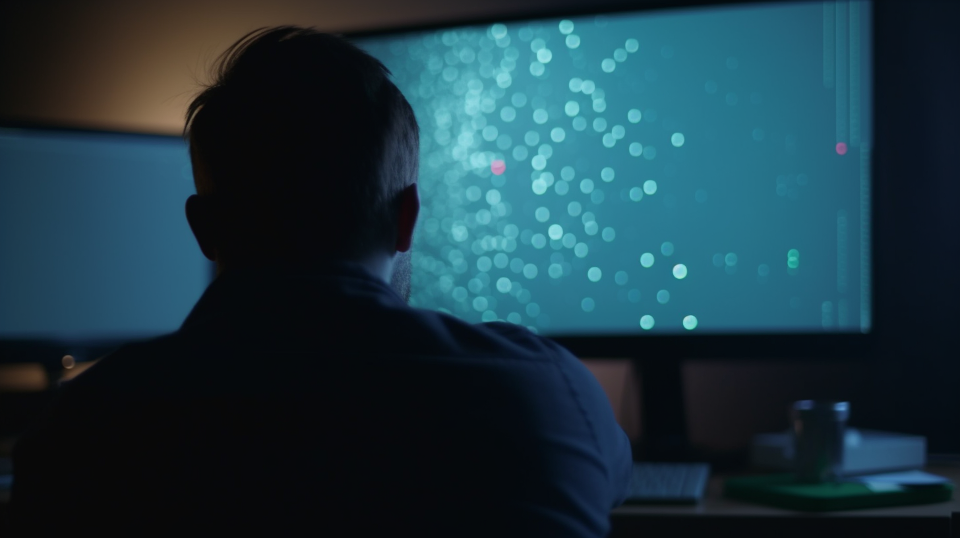
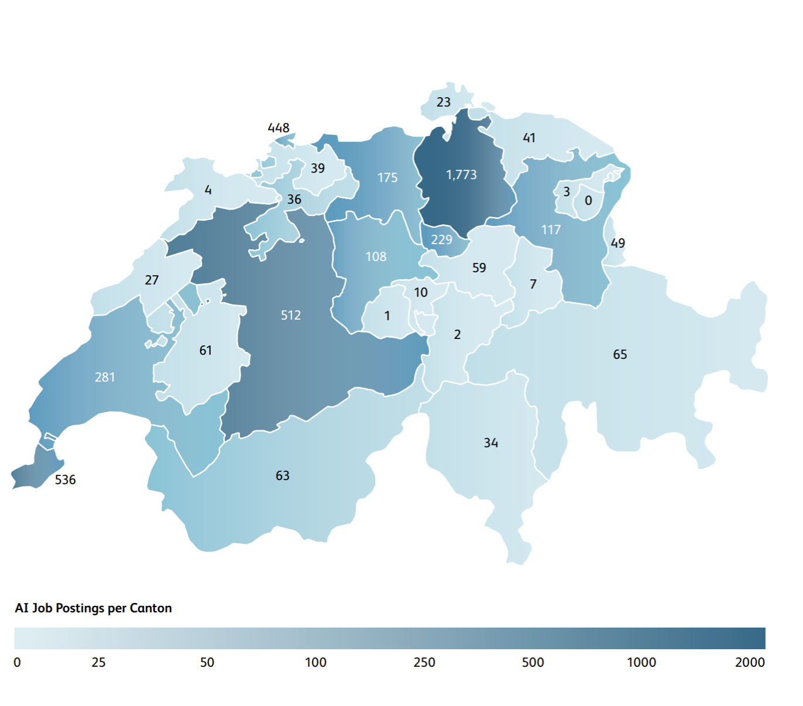
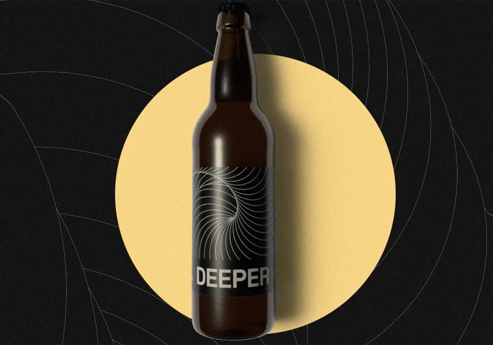
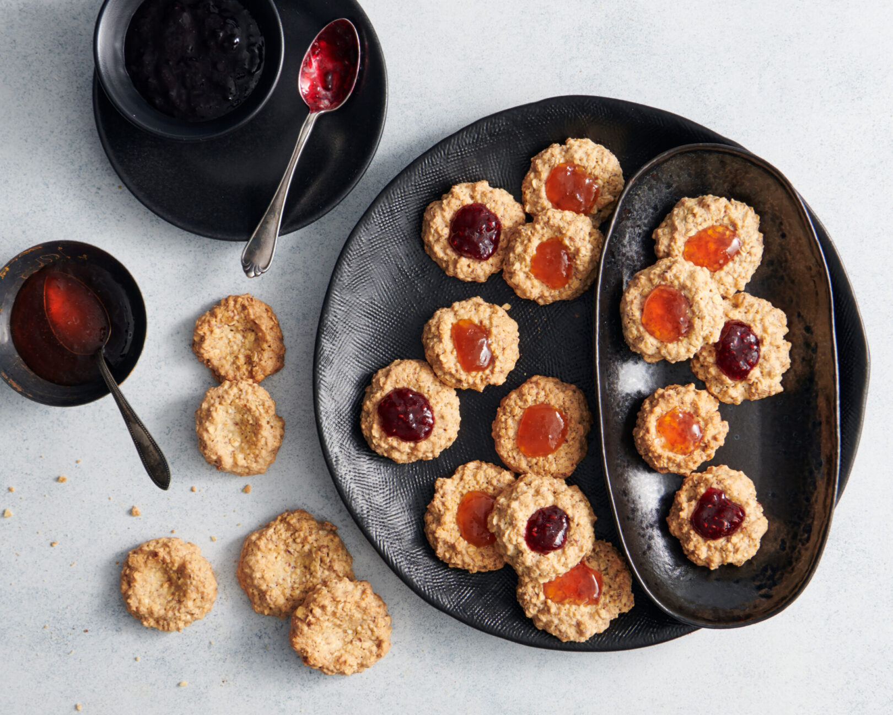
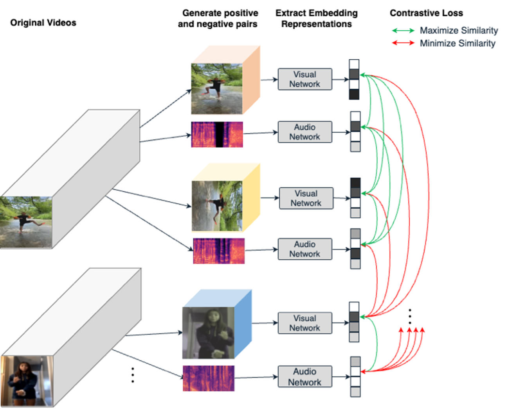
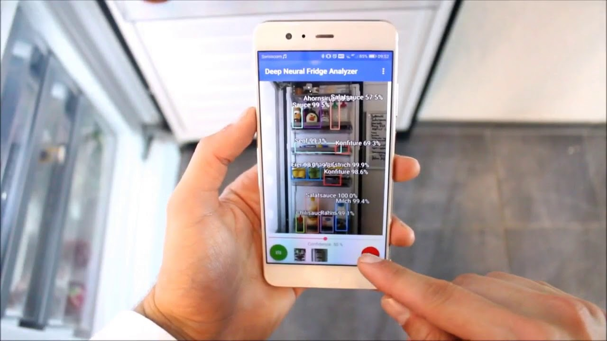

Projects
Notable Work

2023 – Present
Gopf AG — AI-Powered Competitive Intelligence Platform
Co-founded and built from scratch: a B2B SaaS platform for competitive and market intelligence powered by NLP and Agentic AI. Full-stack: cloud infrastructure, ML pipelines, and frontend. Helps businesses make better-informed strategic decisions.

2025
Swiss AI Jobs Report 2025
Co-authored the Swiss AI Jobs Report 2025 in collaboration with HSLU, analyzing the Swiss AI labor market. Widely covered in Swiss media and released September 2025.
2021 – 2025 · PhD Research
TikTok Content Originality — Multimodal Video Analytics
Developed a machine learning pipeline (MUVID) to quantify originality in short-form video content on TikTok using multimodal embeddings across 57,000+ videos. Key finding: being too original hurts engagement — audiences prefer prototypical content. Under review at Journal of Marketing.

2020 · First in Switzerland
AI Beer Brewing — "Deeper"
In collaboration with HSLU, Jaywalker Digital, and craft brewery MN Brew, developed the first AI-brewed beer in Switzerland. Neural networks trained on ~67,000 international beer recipes generated novel brewable recipes. The beer "Deeper" was commercially sold by MN Brew. Covered by Communications of the ACM.

2021
AI-Generated Christmas Cookies for Betty Bossi
Used generative AI trained on recipe data to create novel Guetzli (cookie) recipes, in collaboration with Betty Bossi and HSLU. Widely covered in Swiss media including Luzerner Zeitung and Die Welt.
2021 – 2023 · Innosuisse
Eventfrog Recommender Technologies
Led a 2-year Innosuisse-funded applied R&D project with industry partner Eventfrog, one of Switzerland's leading event ticketing platforms. Built machine learning systems to automate data and service mediation for event organizers, enabling personalised recommendations at scale. Team of 6 researchers across HSLU's Applied AI Lab.
2020
NOTAM Automation
Automated Smartification of Notices to Airmen (NOTAMs) using NLP and ML to convert unstructured aviation notices into structured, queryable data. Presented at the 7th Swiss Conference on Data Science (IEEE).

2021 · Master Thesis
Learning Video Embeddings for Similarity Computation
Master thesis at HSLU: learned video embeddings for computing similarity across short-form video content, laying the groundwork for later multimodal video analytics research.
2019 · Master Specialization Project
Deep Inverse Cooking
Specialization project at HSLU: deep learning approach to inverse cooking — predicting ingredient lists and recipes from food images using neural networks.

2018 · Bachelor Thesis
Deep Neural Fridge Analyzer
Bachelor thesis with Marvin Walker at HSLU: a deep learning app that identifies ~70 food items from a single fridge photo and suggests matching recipes from a database of 530,000. The model trained on ~550 crowdsourced images over six days. Covered by Luzerner Zeitung; awarded Dean's List 2018.
2022
Hand Pose Estimation for Touchable Projectors
Minimal hand pose estimation system for touchable projector-depth systems, enabling gesture-based interaction with projected surfaces. Presented at the 9th IEEE Swiss Conference on Data Science.